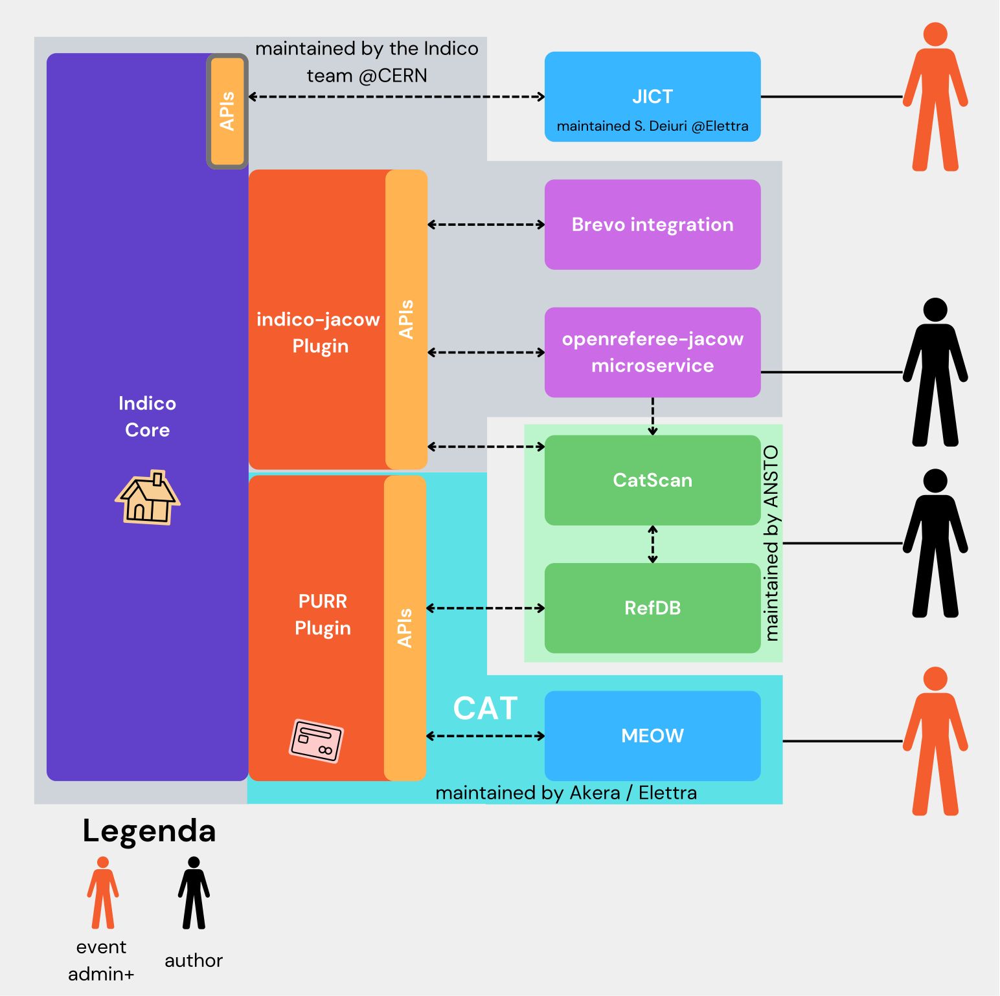

This site hosts the documentation on how to run a JACoW conference with Indico and related tools needed before, during and after the event takes place
Basic how-to for conference attendees
The General section of this site contains basic instructions for common user actions, like how to login or manage your JACoW account.
JACoW Conference Manual
Every JACoW conference is made equal, but some are more equal than others. The manual made for IPAC covers all the aspects of a JACoW conference. The manual includes how-tos for broad scope efforts, such as for organising committees, as well as workflows and other details for authors and editors. It is available at the address ipac-docs.jacow.org.
IT documentation
But it's not only Indico... a lot of other tools are needed. Information, instructions and how-to's are available at http://it-docs.jacow.org/ (dedicated to conference organisers, especially IT managers).
JACoW tools documentation
Most of the following tools are needed, but not all of them need an organiser's touch. The manual above links to them when this is needed.
Tools overview
The following diagram describes the main relationships among the most common tools used to manage a JACoW conference. Refer to the detailed table below for a description of each tool.

| Tool | Documentation site |
|---|---|
| Indico JACoW conferences/events are managed by Indico - independently hosted at CERN for JACoW (indico.jacow.org) |
getindico.io |
| JACoW Indico plugin This plugin implements some specific JACoW characteristics that are not available in the generic Indico |
|
| OpenReferee webservice This web application implements the specific JACoW editing workflow (like the multiple editable states and the QA phase) |
|
| Conference Assembly Tool (CAT) CAT can create JACoW-compliant proceedings from the material stored in and managed by Indico |
CAT-docs.jacow.org |
| Proceedings Utility Running Remotely (PURR) PURR is the CAT frontend interface in Indico. Being an Indico plugin, it is hosted on the same server where Indico runs (indico.jacow.org) |
PURR-docs.jacow.org |
| Machine Editor for cOnferences Website (MEOW) MEOW is the worker that actually creates the proceedings. It can have multiple instances. The main and default one is hosted at Elettra |
MEOW-docs.jacow.org |
| JACoW-Indico Conference Tools (JICT) Multiple utilities needed before, during and after the conference by the Editor in Chief. It contains tools like submission statistics, editable checks, Proceedings Office screens, Dotting Board, Poster Manager tools |
|
| Acrobat/PitStop/PowerPoint tools for paper editing Endpoint tools - needed on the Proceedings Office workstations used by editors |
|
| IPAC Light Peer Review advanced management with Indico Utilities to enhance Indico's peer review the IPAC way |
|
| CatScan interface Frontend for CatScan - used by authors and editors to check compliance of submitted source files. Hosted on GitHub by way of GitHub Pages |
jacow.org/Authors/CSEHelp |
| CatScan checker Worker for CatScan - this is the engine that actually performs the checks, triggered by the CatScan interface |
|
| References DB Database of reference to JACoW papers. Can also provide references to non-JACoW papers in the correct format |
jacow.org/Authors/RefSearchToolHelp |
| JACoW templates Collections of source files (and instructions) to write JACoW papers in the correct format |
jacow.org/Authors/HomePage |
| Software deploy and setup for regular JACoW Editor Workstation using Puppet's Bolt Utility to easily deploy software onto the Editor workstations in the Proceedings Office |
|
| Small but efficient Speaker Timer written in JavaScript Can be used on stage in the auditoria during the conference if not provided by the venue |